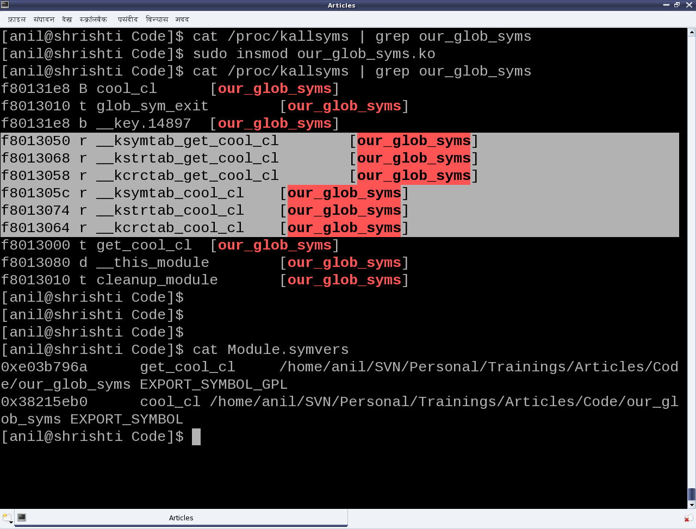
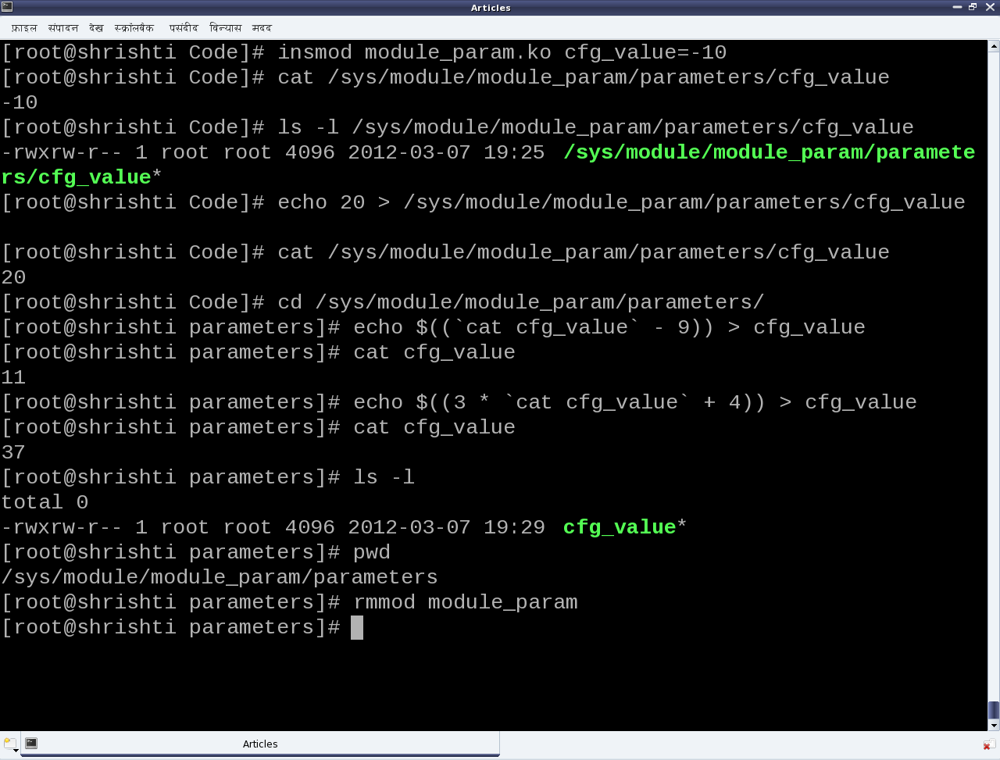

Module Interactions
This seventeenth article, which is part of the series on Linux device drivers, demonstrates various interactions with a Linux module.
As Shweta and Pugs are gearing up for their final semester project in Linux drivers, they are closing on some final tidbits of technical romancing. This mainly includes the various communications with a Linux module (dynamically loadable and unload-able driver), namely accessing its variables, calling its functions, and passing parameters to it.
Global variables and functions
One might think as what a big deal in accessing the variables and functions of a module, outside it. Just make them global, declare them extern in a header, include the header, and access. In the general application development paradigm, it is this simple – but in kernel development environment, it is not so. Though, recommendations to make everything static by default, has always been there, there were and are cases where non-static globals may be needed. A simple example could be a driver spanning over multiple files and function(s) from one file needed to be called in the other. Now to avoid any kernel collision even with such cases, every module is embodied in its own name space. And we know that two modules with the same name cannot be loaded at the same time. Thus by default zero collision is achieved. However, this also implies that by default nothing from a module can be made really global throughout the kernel, even if we want to. And exactly for such scenarios, the <linux/module.h> header defines the following macros:
EXPORT_SYMBOL(sym)
EXPORT_SYMBOL_GPL(sym)
EXPORT_SYMBOL_GPL_FUTURE(sym)
Each of these exports the symbol passed as their parameter, with additionally putting them in the default, _gpl and _gpl_future sections, respectively. And hence only one of them has to be used for a particular symbol – though the symbol could be either a variable name or a function name. Here’s the complete code (our_glob_syms.c) to demonstrate the same:
#include <linux/module.h>
#include <linux/device.h>
static struct class *cool_cl;
static struct class *get_cool_cl(void)
{
return cool_cl;
}
EXPORT_SYMBOL(cool_cl);
EXPORT_SYMBOL_GPL(get_cool_cl);
static int __init glob_sym_init(void)
{
if (IS_ERR(cool_cl = class_create(THIS_MODULE, "cool")))
/* Creates /sys/class/cool/ */
{
return PTR_ERR(cool_cl);
}
return 0;
}
static void __exit glob_sym_exit(void)
{
/* Removes /sys/class/cool/ */
class_destroy(cool_cl);
}
module_init(glob_sym_init);
module_exit(glob_sym_exit);
MODULE_LICENSE("GPL");
MODULE_AUTHOR("Anil Kumar Pugalia <email@sarika-pugs.com>");
MODULE_DESCRIPTION("Global Symbols exporting Driver");
Each exported symbol also have a corresponding structure placed into each of the kernel symbol table (__ksymtab), kernel string table (__kstrtab), and kernel CRC table (__kcrctab) sections, marking it to be globally accessible. Figure 30 shows a filtered snippet of the /proc/kallsyms kernel window, before and after loading the module our_glob_syms.ko, which has been compiled using the driver’s usual makefile.

The following code shows the supporting header file (our_glob_syms.h), to be included by modules using the exported symbols cool_cl and get_cool_cl:
#ifndef OUR_GLOB_SYMS_H
#define OUR_GLOB_SYMS_H
#ifdef __KERNEL__
#include <linux/device.h>
extern struct class *cool_cl;
extern struct class *get_cool_cl(void);
#endif
#endif
Figure 30 also shows the file Module.symvers, generated by compilation of the module our_glob_syms. This contains the various details of all the exported symbols in its directory. Apart from including the above header file, the modules using the exported symbols, possibly should have this file Module.symvers in their build directory.
Note the <linux/device.h> header in the above examples, is being included for the various class related declarations & definitions, which has been already covered under the character drivers discussions.
Module Parameters
Being aware of passing command line arguments to an application, it is a natural quest to ask if something similar can be done with a module. And the answer is yes. Parameters can be passed to a module along with loading it, say using insmod. Interestingly enough and in contrast with the command line arguments to an application, these can be modified even later as well, through sysfs interactions.
The module parameters are setup using the following macro (defined in <linux/moduleparam.h>, included through <linux/module.h>):
module_param(name, type, perm)
where, name is the parameter name, type is the type of the parameter, and perm is the permissions of the sysfs file corresponding to this parameter. Supported type values are: byte, short, ushort, int, uint, long, ulong, charp (character pointer), bool or invbool (inverted boolean). The following module code (module_param.c) demonstrates a module parameter:
#include <linux/module.h>
#include <linux/kernel.h>
static int cfg_value = 3;
module_param(cfg_value, int, 0764);
static int __init mod_par_init(void)
{
printk(KERN_INFO "Loaded with %d\n", cfg_value);
return 0;
}
static void __exit mod_par_exit(void)
{
printk(KERN_INFO "Unloaded cfg value: %d\n", cfg_value);
}
module_init(mod_par_init);
module_exit(mod_par_exit);
MODULE_LICENSE("GPL");
MODULE_AUTHOR("Anil Kumar Pugalia <email@sarika-pugs.com>");
MODULE_DESCRIPTION("Module Parameter demonstration Driver");
Note that before the parameter setup, a variable of the same name and compatible type needs to be defined.
Subsequently, the following steps and experiments are shown in Figures 31 and 32:
- Building the driver (module_param.ko file) using the driver’s usual makefile
- Loading the driver using insmod (with and without parameters)
- Various experiments through the corresponding /sys entries
- And finally, unloading the driver using rmmod


Observe the following:
- Initial value (3) of cfg_value becomes its default value when insmod is done without any parameters
- Permission 0764 gives
rwxto the user, rw- to the group, and r– for the others on the file cfg_value under parameters of module_param under/sys/module/
Check for yourself:
- Output of
dmesg | tailon every insmod andrmmodfor the output of printk‘s - Try writing into the
/sys/module/module_param/parameters/cfg_valuefile as a normal user
Summing up
With this, the duo have a fairly good understanding of Linux drivers and they are all set to start working on their final semester project. Any guesses on what their topic is all about? Hint: They have picked up one of the most daunting Linux driver topic. Let us see, how they fair at it.